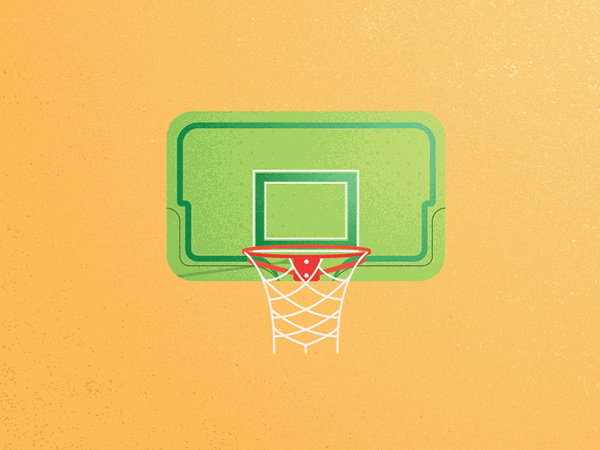

TRIGGERS
- Hovering on the "Sign In" button.
- Hovering off the "Sign In" button.
- Clicking on the "Sign In" button with the correct sign-in information.
- Clicking on the "Sign In" button with the incorrect sign-in information.
- Clicking on the "Sign In" button while one/both of the input boxes are left empty.
RULES
HOVER ON/OFF SIGN IN BUTTON
- ON: "Sign-In" button adopts a white background with black text and a black border.
- ON: "Sign-In" button cursor changes to a hand pointer.
- OFF: "Sign-In" button changes back to it's original black background with white text while keeping the black border.
- OFF: "Sign-In" button cursor changes back to the standard pointer arrow.
CLICK ON SIGN IN BUTTON: CORRECT INFO
- Sign-in information is being processed
- Logo div on right side will fade to a GIF of a basketball being scored to signify a succesful sign-in.
CLICK ON SIGN IN BUTTON: INCORRECT INFO
- Sign-in information is being processed
- Logo div on right side will fade to a GIF of a basketball clanking off the rim to show an unsuccesful sign-in.
- Logo div on right side will also ask the user to try again.
CLICK ON SIGN IN BUTTON: EMPTY INPUT TEXT
- Sign-in information is being processed
- If the any input box is left empty when the sign-in button gets clicked, a small GIF of a referee will fade in and blow a whistle.
- Once the user starts to fill in the input box, the referee will fade away.
- Input text will turn red to signify the error.
FEEDBACK
HOVER ON/OFF SIGN IN BUTTON
- ON: "Sign-In" button adopts a white background with black text and a black border.
- ON: "Sign-In" button cursor changes to a hand pointer.
- OFF: "Sign-In" button changes back to it's original black background with white text while keeping the black border.
- OFF: "Sign-In" button cursor changes back to the standard pointer arrow.
CLICK ON SIGN IN BUTTON: CORRECT INFO
- Logo div on right side will fade to a GIF of a basketball being scored to signify a succesful sign-in.
CLICK ON SIGN IN BUTTON: INCORRECT INFO
- Logo div on right side will fade to a GIF of a basketball clanking off the rim to show an unsuccesful sign-in.
- Logo div on right side will also ask the user to try again.
CLICK ON SIGN IN BUTTON: EMPTY INPUT TEXT
- If the any input box is left empty when the sign-in button gets clicked, a small GIF of a referee will fade in and blow a whistle.
- Once the user starts to fill in the input box, the referee will fade away.
- Input text will turn red to signify the error.
LOOPS/MODES
- Loops: None
- Modes: If the sign-in information is incorrect, the missed shot gif will display. If the information is correct, the swish gif will display.

